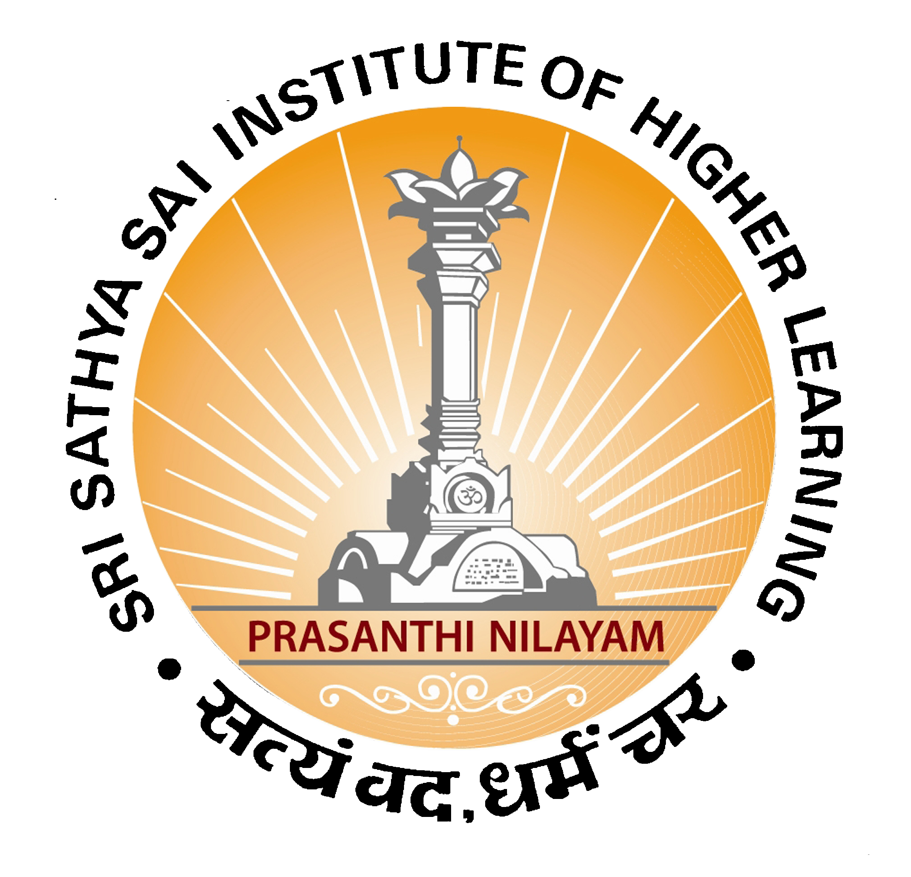

Programming for Performance
(CS 1207) Mon - Fri 1:00 - 3:50 p.m.
Announcements
- Mar 22
- Quiz and its solution are posted in the assignments page. Sample solution for the programming contest is also posted.
CONGRATULATIONS for successfully completing the course !!!
- Mar 21
- Optional Programming contest is posted. Work on this at your own convenience.
- Mar 21
- GTC 2013 keynote was watched partly. Udacity course cs344 course material along with videos is shared.
PS1 to PS3 from udacity are due March 22.
- Mar 18
- GPU (CUDA) programming lecture is posted. Last year's course website: http://dmacssite.github.com
- Mar 18
- Programming contest results are posted. Congratulations to everyone for working hard on this, special mentions to Pinak and Hemanth!!!
- Mar 15
- Programming contest (Test) is posted. It is strictly an individual test. Breaking the academic trust leads to disqualification.
- Mar 12
- LS 6 is posted. It introduces the MIC (Intel Xeon Phi) based programming.
- Mar 8
- PA3B is posted. Compare your PA3A solution with the solution given here.
- Feb 28
- PA3 is posted. Strict deadline for submission is on March 7th. It is a class competition assignment.
- Feb 20
- LS5 is posted. The objective of this lab is to learn cache blocking. Lecture slides are also posted.
- Feb 11
- PA 2 is posted. The objective of the assignment is to learn writing efficient SIMD code (you are encouraged to use
IACA to check the efficiency). And also in this assignment, we will test how effective the compiler vectorization capabilities are.
A relevant lecture notes (Compiler Vectorization) is also posted.
- Feb 5
- LS 4 is posted. The objective of the assignment is to check the effectiveness of MATMUL code vectorization using
IACA (Intel Architecture Code Analyzer). It is a nice opportunity to also observe how professional code is written.
- Jan 30th
- A document with useful links on writing branch predictor friendly code is posted in the lectures page.
- Jan 29th
- Update: In view of the due date change of LS2, the due date for both PA1 and LS3 is changed to Feb 3rd (Sunday) 10 PM.
- Jan 24th
- LS2 is posted. It is scheduled for Jan 26th.
- Jan 24th
- PA1 is posted. It is an individual assignment.
- Jan 26th
- Update: To give you more time for doing a comprehensive study and analysis of the Lab sessions
(2&3), i.e., sorting, scalaradd, reduction(benchmarkcode), the deadline for this set of Lab sessions is postponed to tomorrow.
LS2 submission Due: Jan 28th 10PM.
- Jan 18th
- The tar file with various versions of Matrix Multiplication code is posted.
Use build.sh to build and run.sh to run all the versions.
- Jan 17th
- Syllabus is here. Syllabus
- Jan 17th
- 2012 version of this course (on local e-guru): progforperf2012
- Jan 17th
- Welcome to CS 1207 !
Academic Integrity:
All LS's and PA1 are single-student homeworks. The work must be all your own. Do not copy any parts of any of the homeworks from anyone including the web. Do not look at other students' code, papers, or exams. Do not make any parts of your homework available to anyone, and make sure no one can read your files.
We will be using the Moss system to detect software plagiarism. This system is amazingly good, because it understands the programming language C.
It is not considered copying to clarify vague points in the assignments, or to give help or receive help in using the computer systems, compilers, debuggers, profilers, or other facilities.
Any thing other than those mentioned will be considered as copying.
Credits:
Much of the material used in this course is taken from the courses taught by distinguished professors: Prof. Markus Puschel (ETH), Prof. Maria Garzaran (UIUC),
Prof. Keshav Pingali (UT), Prof. Charles E. Leiserson (MIT), Prof. Richard Vudua (GaTech), Prof. James Demmel and Prof. Dan Garcia (UCB), Prof. Saday (Ohio).
Thanks to all of them for making their course material available online.